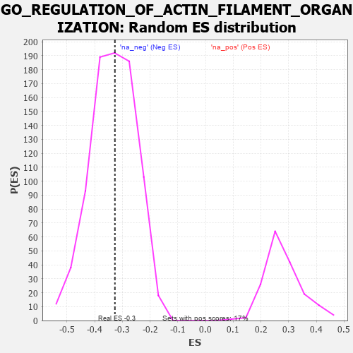

| | | Dataset | 7d |
| Phenotype | NoPhenotypeAvailable |
| Upregulated in class | na_neg |
| GeneSet | GO_REGULATION_OF_ACTIN_FILAMENT_ORGANIZATION |
| Enrichment Score (ES) | -0.32719466 |
| Normalized Enrichment Score (NES) | -0.97546506 |
| Nominal p-value | 0.5391095 |
| FDR q-value | 0.9011311 |
| FWER p-Value | 1.0 |
Table: GSEA Results Summary
 Fig 1: Enrichment plot: GO_REGULATION_OF_ACTIN_FILAMENT_ORGANIZATION
Fig 1: Enrichment plot: GO_REGULATION_OF_ACTIN_FILAMENT_ORGANIZATION
Profile of the Running ES Score & Positions of GeneSet Members on the Rank Ordered List
| PROBE | GENE SYMBOL | GENE_TITLE | RANK IN GENE LIST | RANK METRIC SCORE | RUNNING ES | CORE ENRICHMENT | | 1 | TGFB3 | | | 49 | 2.654 | 0.1188 | No |
| 2 | ID1 | | | 719 | 0.555 | 0.0604 | No |
| 3 | NCK2 | | | 1131 | 0.458 | 0.0301 | No |
| 4 | PAK3 | | | 1889 | 0.322 | -0.0504 | No |
| 5 | WASF1 | | | 2303 | 0.259 | -0.0903 | No |
| 6 | MET | | | 2430 | 0.240 | -0.0949 | No |
| 7 | SLIT2 | | | 2724 | 0.195 | -0.1227 | No |
| 8 | FER | | | 2803 | 0.183 | -0.1240 | No |
| 9 | BRK1 | | | 2805 | 0.183 | -0.1155 | No |
| 10 | WNT4 | | | 3023 | 0.146 | -0.1360 | No |
| 11 | TWF1 | | | 3199 | 0.123 | -0.1524 | No |
| 12 | SMAD3 | | | 3303 | 0.105 | -0.1604 | No |
| 13 | FMN1 | | | 3363 | 0.095 | -0.1634 | No |
| 14 | GMFB | | | 3381 | 0.091 | -0.1613 | No |
| 15 | MTOR | | | 4114 | -0.025 | -0.2525 | No |
| 16 | ABL1 | | | 4125 | -0.027 | -0.2526 | No |
| 17 | ARPC2 | | | 4232 | -0.047 | -0.2637 | No |
| 18 | WNT11 | | | 4282 | -0.056 | -0.2673 | No |
| 19 | BAG4 | | | 4314 | -0.061 | -0.2683 | No |
| 20 | EPS8 | | | 4474 | -0.088 | -0.2842 | No |
| 21 | ABI2 | | | 4554 | -0.106 | -0.2892 | No |
| 22 | ARPC3 | | | 4659 | -0.129 | -0.2962 | No |
| 23 | LIMK1 | | | 4684 | -0.136 | -0.2929 | No |
| 24 | ARF6 | | | 4704 | -0.140 | -0.2887 | No |
| 25 | WASF3 | | | 4730 | -0.145 | -0.2850 | No |
| 26 | FLII | | | 4795 | -0.156 | -0.2857 | No |
| 27 | WDR1 | | | 4824 | -0.163 | -0.2816 | No |
| 28 | DLG1 | | | 4860 | -0.169 | -0.2781 | No |
| 29 | CAPZB | | | 4908 | -0.179 | -0.2755 | No |
| 30 | ARAP1 | | | 4963 | -0.191 | -0.2734 | No |
| 31 | SSH1 | | | 5254 | -0.258 | -0.2979 | No |
| 32 | PICK1 | | | 5265 | -0.263 | -0.2867 | No |
| 33 | EPHA1 | | | 5349 | -0.285 | -0.2838 | No |
| 34 | LATS1 | | | 5412 | -0.298 | -0.2776 | No |
| 35 | BBS4 | | | 5806 | -0.407 | -0.3080 | Yes |
| 36 | ARPC4 | | | 5886 | -0.430 | -0.2977 | Yes |
| 37 | ACTN2 | | | 5960 | -0.458 | -0.2854 | Yes |
| 38 | JMY | | | 6023 | -0.479 | -0.2706 | Yes |
| 39 | RAC1 | | | 6036 | -0.484 | -0.2493 | Yes |
| 40 | ADD2 | | | 6046 | -0.487 | -0.2275 | Yes |
| 41 | EVL | | | 6052 | -0.490 | -0.2051 | Yes |
| 42 | DBNL | | | 6084 | -0.501 | -0.1854 | Yes |
| 43 | GBA2 | | | 6136 | -0.515 | -0.1676 | Yes |
| 44 | ROCK1 | | | 6152 | -0.520 | -0.1450 | Yes |
| 45 | TPM1 | | | 6226 | -0.545 | -0.1286 | Yes |
| 46 | CDC42 | | | 6236 | -0.548 | -0.1039 | Yes |
| 47 | SVIL | | | 6259 | -0.558 | -0.0804 | Yes |
| 48 | KANK1 | | | 6536 | -0.678 | -0.0833 | Yes |
| 49 | ARF1 | | | 6583 | -0.701 | -0.0561 | Yes |
| 50 | ALMS1 | | | 6590 | -0.704 | -0.0237 | Yes |
| 51 | PAK1 | | | 6691 | -0.757 | -0.0007 | Yes |
| 52 | FHOD3 | | | 6835 | -0.834 | 0.0205 | Yes |
| 53 | COTL1 | | | 7166 | -1.046 | 0.0281 | Yes |
| 54 | KANK3 | | | 7605 | -1.559 | 0.0462 | Yes |
Table: GSEA details [plain text format]

Fig 2: GO_REGULATION_OF_ACTIN_FILAMENT_ORGANIZATION: Random ES distribution
Gene set null distribution of ES for GO_REGULATION_OF_ACTIN_FILAMENT_ORGANIZATION